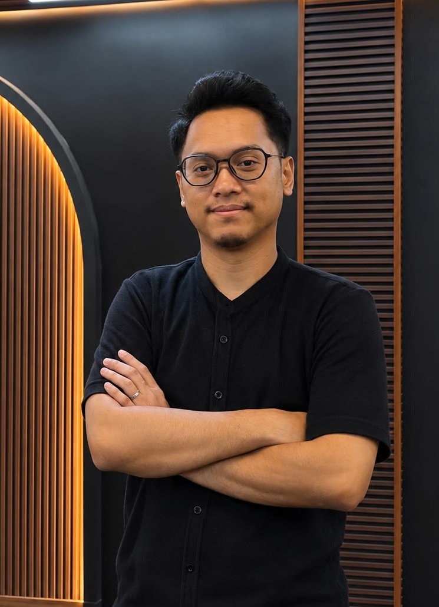
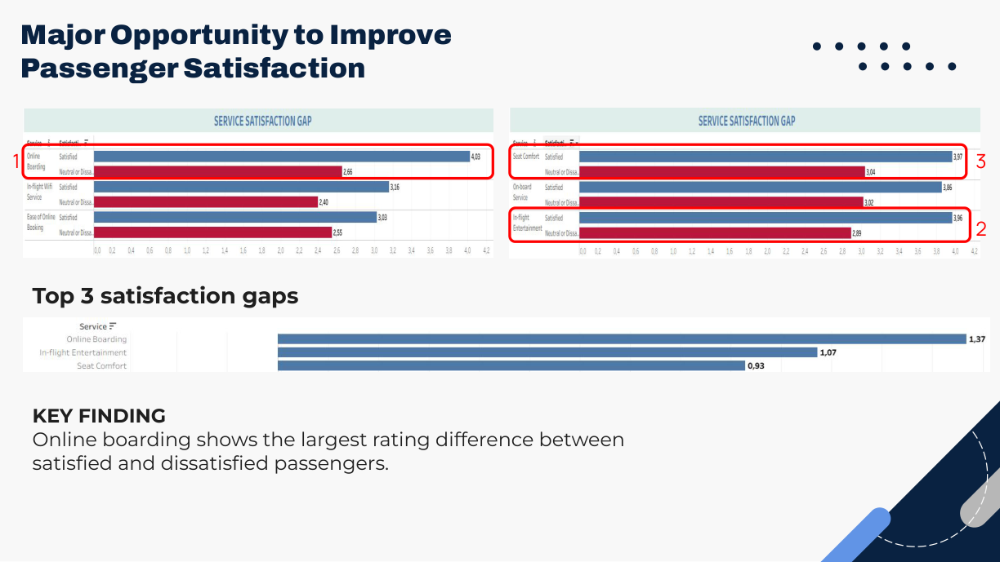
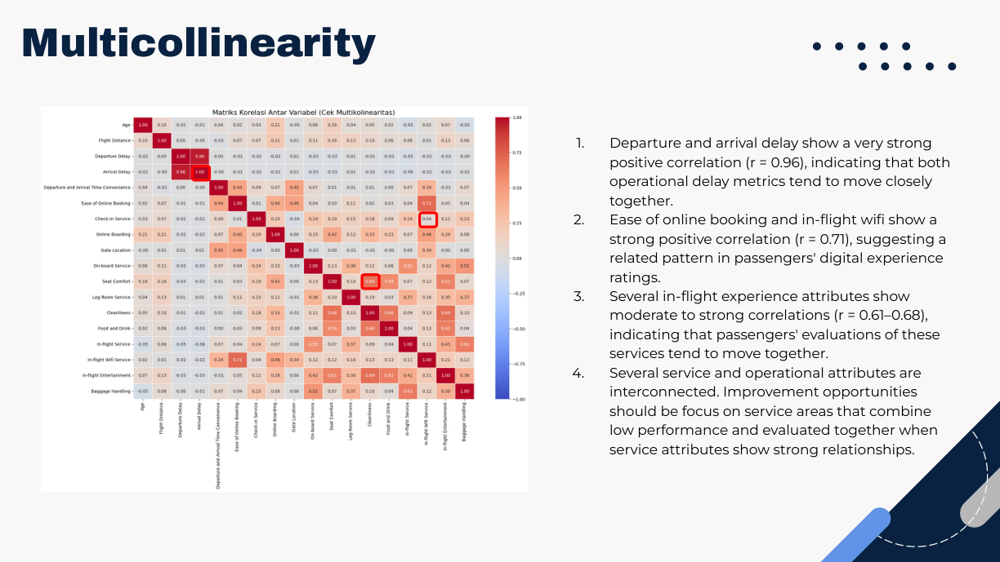
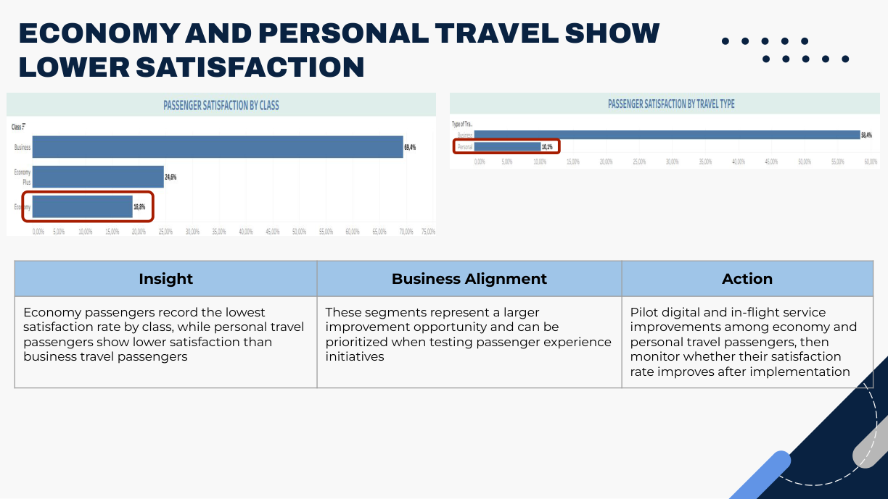
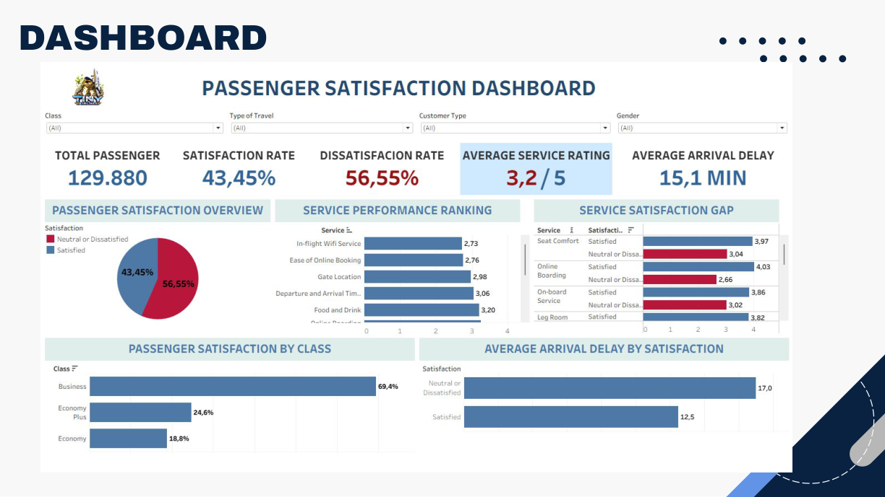

Turning data into business insights.
Hi, I'm Dani Dwi Darmawan an analytical professional combining business operations experience with hands-on data analytics to support smarter decisions.

Business mindset. Analytical approach.
Bridging operational experience and data-driven problem solving.
About Me
I am an analytical professional with a background in business operations and hands-on experience in data analytics. Conducted an airline passenger satisfaction analysis project to identify key factors affecting customer satisfaction. Proposed recommendations targeting a 10% relative increase in passenger satisfaction to 47.80% within six months. Developed strategies focusing on improving service quality and operational performance. Proficient in Microsoft Excel, SQL, and Tableau, with strong problem-solving, critical thinking, and communication skills. I am eager to apply my analytical skills and business knowledge to support informed decision-making and business growth.
Technical & Soft Skills
Tools and analytical methods used across data and business projects.
Data Analysis
Visualization & BI
Analytical Methods
Soft Skills
Featured Projects
Analytical work focused on solving business problems, not just creating charts.
Passenger Experience
Analytics
Airline Passenger Satisfaction Analysis
Analyzing passenger satisfaction drivers to develop data-driven recommendations targeting a 10% relative improvement within six months.
Experience That Supports My Analytics Work
Selected responsibilities relevant to analysis, performance monitoring and data-driven decisions.
Business Owner - Barberpedia Sukmajaya
- Analyzed customer preferences and sales trends to identify business opportunities.
- Applied pricing and cost awareness to operational decisions.
Business Owner - Villa Taman Kelinci
- Monitored sales performance, operational expenses and business revenue.
- Improved booking and service processes to support operational efficiency.
Sales Operations & Bid Management
- Analyzed and processed sales data using Microsoft Excel to identify potential opportunities across customer segments.
- Coordinated cross-functional handovers and business documentation.
Network Operations Center
- Analyzed network alerts, incident logs and performance data to identify recurring issues.
- Monitored network performance and system availability.
Education & Analytics Training
RevoU - Full Stack Data Analytics
Business problem identification, statistical analysis, Excel, SQL, Python and Tableau.
Gunadarma University
Bachelor's Degree in Information Technology · GPA 3.28
Let's connect and turn data into insights.
Interested in Data Analyst and Business Intelligence opportunities.
Get in touch
Passenger Satisfaction Analysis
Turning passenger insights into a better travel experience.
Understanding the business challenge
Business background
Passenger satisfaction reflects service quality across the digital journey, in-flight experience and operational reliability. The dataset contains 24 variables, including 14 service attributes and one satisfaction outcome.
Problem & objective
Only 43.45% of passengers were satisfied, while 56.55% were neutral or dissatisfied. The objective was to propose data-driven improvements targeting a 10% relative increase in satisfaction within six months, from 43.45% to 47.80%.
My role in the project
Individual data analytics project completed as part of RevoU Full Stack Data Analytics training. My scope covered the analytical workflow and recommendations, not implementing airline operations changes.
Frame the problem
Defined the satisfaction challenge, improvement objective, hypotheses and metrics.
Prepare & analyze data
Cleaned the passenger dataset and conducted EDA, service-gap comparisons, correlation analysis and passenger segmentation.
Visualize & communicate
Developed Tableau visualizations, summarized key findings and presented prioritized business recommendations.
From business question to actionable insight
Business problem & hypotheses
Examined digital experience, in-flight services and operational reliability as potential drivers of dissatisfaction.
Data preparation & exploratory analysis
Prepared passenger records, reviewed overall satisfaction and compared service ratings between satisfied and neutral/dissatisfied groups.
Correlation & segmentation
Explored relationships between service and delay attributes and compared satisfaction across travel class and travel type.
Dashboard & recommendations
Communicated findings in Tableau and prioritized improvement opportunities by business relevance.
What the analysis revealed
Digital experience
Online boarding showed the largest satisfaction rating gap between satisfied and dissatisfied passengers: 1.37.
In-flight experience
In-flight entertainment showed a satisfaction rating gap of 1.07.
Operational reliability
Departure and arrival delays were strongly correlated (r = 0.96), indicating that these measures move closely together.
Priority passenger segments
Economy and personal travel passengers had lower satisfaction, suggesting segments to prioritize when piloting improvements.




Recommended improvement priorities
Digital experience
Improve the end-to-end online booking and boarding journey, focusing on the largest service satisfaction gap.
In-flight experience
Strengthen entertainment and passenger comfort, considering the interconnected nature of service attributes.
Operational reliability
Improve departure punctuality and investigate recurring delay patterns to reduce disruptions.